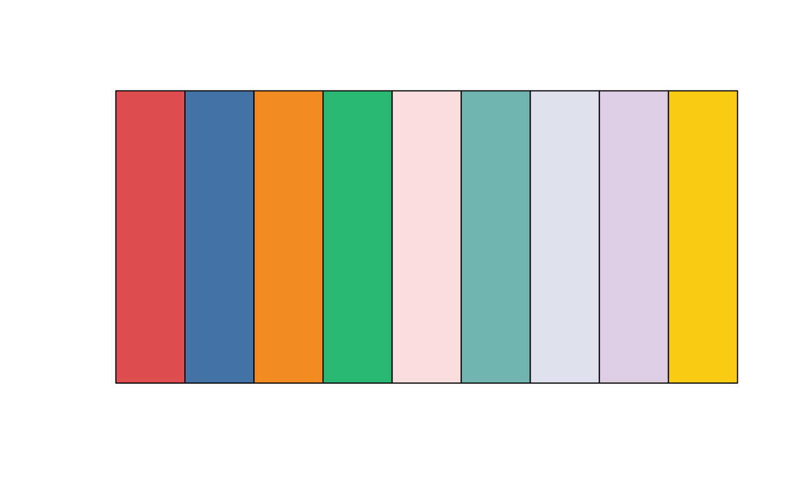
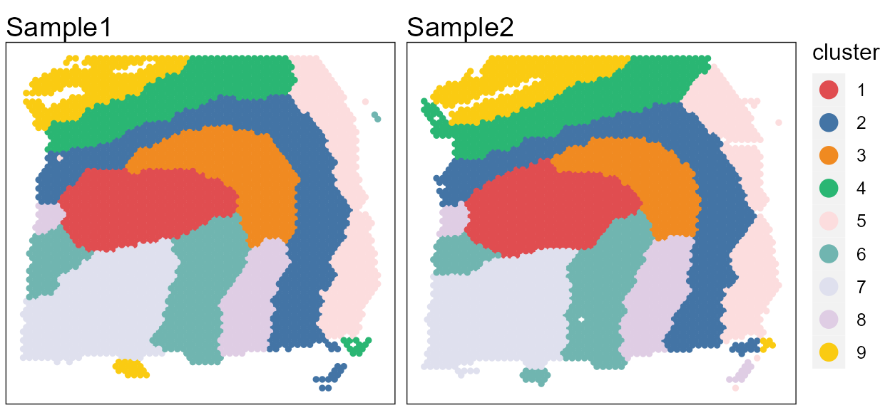
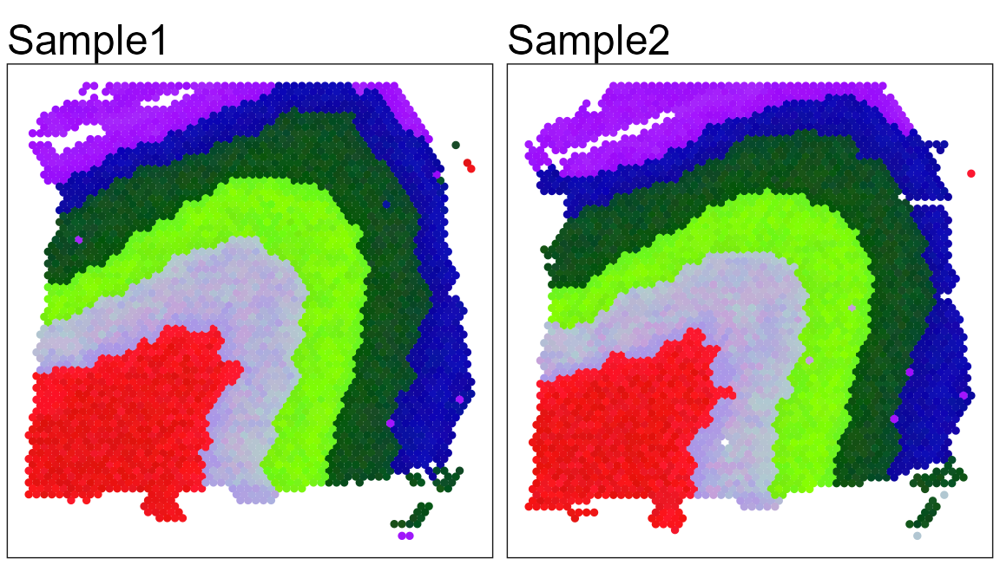
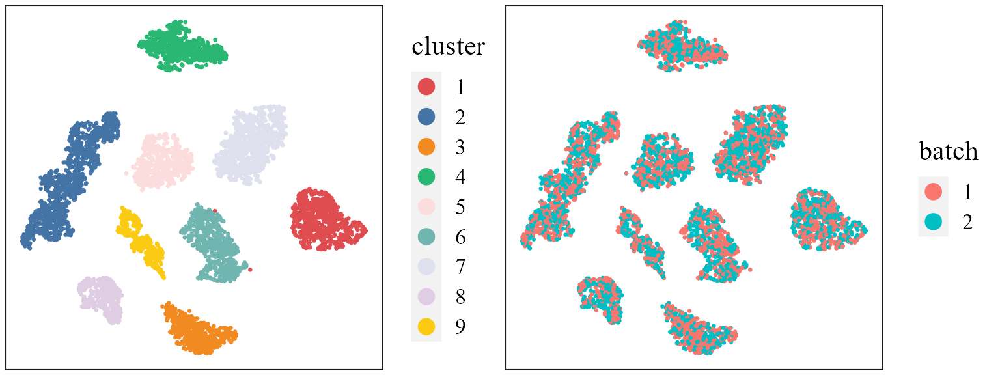
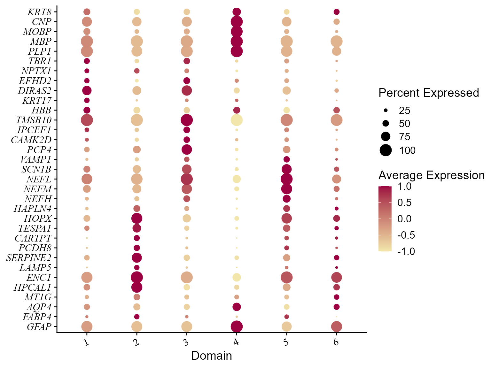
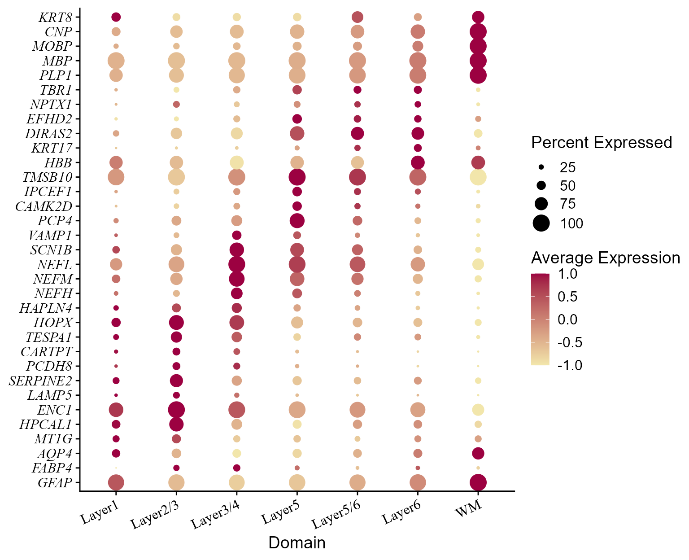

vignettes/ProFASTdlpfc2.Rmd
ProFASTdlpfc2.RmdThis vignette introduces the ProFAST workflow for the analysis of two humn dorsolateral prefrontal cortex (DLPFC) spatial transcriptomics dataset. ProFAST workflow is based on the PRECASTObj object created in the PRECAST R package and the workflow of ProFAST is similar to that of PRECAST; see the vignette (https://feiyoung.github.io/PRECAST/articles/PRECAST.BreastCancer.html) for the workflow of PRECAST. In this vignette, the workflow of ProFAST consists of three steps
We demonstrate the use of ProFAST to two DLPFC Visium data that are here, which can be downloaded to the current working path by the following command:
githubURL <- "https://github.com/feiyoung/ProFAST/blob/main/vignettes_data/seulist2_ID9_10.RDS?raw=true"
download.file(githubURL,"seulist2_ID9_10.RDS",mode='wb')Then load to R
dlpfc2 <- readRDS("./seulist2_ID9_10.RDS")The package can be loaded with the command:
library(ProFAST)
library(PRECAST)
#> Loading required package: parallel
#> Loading required package: gtools
#> PRECAST : An efficient data integration method is provided for multiple spatial transcriptomics data with non-cluster-relevant effects such as the complex batch effects. It unifies spatial factor analysis simultaneously with spatial clustering and embedding alignment, requiring only partially shared cell/domain clusters across datasets. More details can be referred to Wei Liu, et al. (2023) <doi:10.1038/s41467-023-35947-w>. Check out our Package website (https://feiyoung.github.io/PRECAST/index.html) for a more complete description of the methods and analyses
library(Seurat)
#> Warning: package 'Seurat' was built under R version 4.1.3
#> Attaching SeuratObject
#> Attaching spFirst, we view the the two spatial transcriptomics data with ST platform. There are ~15000 genes for each data batch and ~7000 spots in total.
dlpfc2 ## a list including three Seurat object with default assay: RNA
#> [[1]]
#> An object of class Seurat
#> 15027 features across 3639 samples within 1 assay
#> Active assay: RNA (15027 features, 2000 variable features)
#>
#> [[2]]
#> An object of class Seurat
#> 15809 features across 3673 samples within 1 assay
#> Active assay: RNA (15809 features, 2000 variable features)Check the content in dlpfc2.
head(dlpfc2[[1]])We observed the genes are Ensembl IDs. In the following, we will transfer the Ensembl IDs to gene symbols for matching the housekeeping genes in the downstream analysis for removing the unwanted variations.
row.names(dlpfc2[[1]])[1:10]We show how to create a PRECASTObject object step by step. First, we create a Seurat list object using the count matrix and meta data of each data batch.
row and col, which benefits the identification of spaital coordinates by ProFAST
## Get the gene-by-spot read count matrices
countList <- lapply(dlpfc2, function(x) x[["RNA"]]@counts)
M <- length(countList)
### transfer the Ensembl ID to symbol
for(r in 1:M){
row.names(countList[[r]]) <- transferGeneNames(row.names(countList[[r]]), now_name = "ensembl",
to_name="symbol",
species="Human", Method='eg.db')
}
#> Loading required package: org.Hs.eg.db
#> Loading required package: AnnotationDbi
#> Loading required package: stats4
#> Loading required package: BiocGenerics
#>
#> Attaching package: 'BiocGenerics'
#> The following objects are masked from 'package:stats':
#>
#> IQR, mad, sd, var, xtabs
#> The following objects are masked from 'package:base':
#>
#> anyDuplicated, append, as.data.frame, basename, cbind, colnames,
#> dirname, do.call, duplicated, eval, evalq, Filter, Find, get, grep,
#> grepl, intersect, is.unsorted, lapply, Map, mapply, match, mget,
#> order, paste, pmax, pmax.int, pmin, pmin.int, Position, rank,
#> rbind, Reduce, rownames, sapply, setdiff, sort, table, tapply,
#> union, unique, unsplit, which.max, which.min
#> Loading required package: Biobase
#> Welcome to Bioconductor
#>
#> Vignettes contain introductory material; view with
#> 'browseVignettes()'. To cite Bioconductor, see
#> 'citation("Biobase")', and for packages 'citation("pkgname")'.
#> Loading required package: IRanges
#> Loading required package: S4Vectors
#>
#> Attaching package: 'S4Vectors'
#> The following objects are masked from 'package:base':
#>
#> expand.grid, I, unname
#>
#> Attaching package: 'IRanges'
#> The following object is masked from 'package:sp':
#>
#> %over%
#> The following object is masked from 'package:grDevices':
#>
#> windows
#>
#> 'select()' returned 1:many mapping between keys and columns
#> 'select()' returned 1:many mapping between keys and columns
## Check the spatial coordinates: Yes, they are named as "row" and "col"!
print(head(dlpfc2[[1]]@meta.data))
#> orig.ident nCount_RNA nFeature_RNA barcode
#> AAACAAGTATCTCCCA-1 SeuratProject 8436 3564 AAACAAGTATCTCCCA-1
#> AAACAATCTACTAGCA-1 SeuratProject 1662 1145 AAACAATCTACTAGCA-1
#> AAACACCAATAACTGC-1 SeuratProject 3758 1949 AAACACCAATAACTGC-1
#> AAACAGAGCGACTCCT-1 SeuratProject 5418 2409 AAACAGAGCGACTCCT-1
#> AAACAGCTTTCAGAAG-1 SeuratProject 4262 2248 AAACAGCTTTCAGAAG-1
#> AAACAGGGTCTATATT-1 SeuratProject 3984 2159 AAACAGGGTCTATATT-1
#> sample_name tissue row col imagerow imagecol Cluster height
#> AAACAAGTATCTCCCA-1 151673 1 50 102 381.0981 440.6391 7 600
#> AAACAATCTACTAGCA-1 151673 1 3 43 126.3276 259.6310 4 600
#> AAACACCAATAACTGC-1 151673 1 59 19 427.7678 183.0783 8 600
#> AAACAGAGCGACTCCT-1 151673 1 14 94 186.8137 417.2367 6 600
#> AAACAGCTTTCAGAAG-1 151673 1 43 9 341.2691 152.7003 3 600
#> AAACAGGGTCTATATT-1 151673 1 47 13 362.9163 164.9415 3 600
#> width sum_umi sum_gene subject position replicate
#> AAACAAGTATCTCCCA-1 600 8458 3586 Br8100 0 1
#> AAACAATCTACTAGCA-1 600 1667 1150 Br8100 0 1
#> AAACACCAATAACTGC-1 600 3769 1960 Br8100 0 1
#> AAACAGAGCGACTCCT-1 600 5433 2424 Br8100 0 1
#> AAACAGCTTTCAGAAG-1 600 4278 2264 Br8100 0 1
#> AAACAGGGTCTATATT-1 600 4004 2178 Br8100 0 1
#> subject_position discard key
#> AAACAAGTATCTCCCA-1 Br8100_pos0 FALSE 151673_AAACAAGTATCTCCCA-1
#> AAACAATCTACTAGCA-1 Br8100_pos0 FALSE 151673_AAACAATCTACTAGCA-1
#> AAACACCAATAACTGC-1 Br8100_pos0 FALSE 151673_AAACACCAATAACTGC-1
#> AAACAGAGCGACTCCT-1 Br8100_pos0 FALSE 151673_AAACAGAGCGACTCCT-1
#> AAACAGCTTTCAGAAG-1 Br8100_pos0 FALSE 151673_AAACAGCTTTCAGAAG-1
#> AAACAGGGTCTATATT-1 Br8100_pos0 FALSE 151673_AAACAGGGTCTATATT-1
#> cell_count SNN_k50_k4 SNN_k50_k5 SNN_k50_k6 SNN_k50_k7
#> AAACAAGTATCTCCCA-1 6 1 1 1 1
#> AAACAATCTACTAGCA-1 16 1 1 1 1
#> AAACACCAATAACTGC-1 5 2 3 4 5
#> AAACAGAGCGACTCCT-1 2 1 1 1 1
#> AAACAGCTTTCAGAAG-1 4 1 1 1 1
#> AAACAGGGTCTATATT-1 6 2 4 5 6
#> SNN_k50_k8 SNN_k50_k9 SNN_k50_k10 SNN_k50_k11 SNN_k50_k12
#> AAACAAGTATCTCCCA-1 1 1 1 4 4
#> AAACAATCTACTAGCA-1 1 1 1 4 4
#> AAACACCAATAACTGC-1 8 9 10 11 10
#> AAACAGAGCGACTCCT-1 1 1 1 2 2
#> AAACAGCTTTCAGAAG-1 1 3 3 3 3
#> AAACAGGGTCTATATT-1 5 6 7 8 12
#> SNN_k50_k13 SNN_k50_k14 SNN_k50_k15 SNN_k50_k16 SNN_k50_k17
#> AAACAAGTATCTCCCA-1 4 4 3 3 3
#> AAACAATCTACTAGCA-1 4 4 3 3 3
#> AAACACCAATAACTGC-1 9 10 11 11 12
#> AAACAGAGCGACTCCT-1 2 2 1 1 1
#> AAACAGCTTTCAGAAG-1 3 3 2 2 2
#> AAACAGGGTCTATATT-1 12 13 14 15 16
#> SNN_k50_k18 SNN_k50_k19 SNN_k50_k20 SNN_k50_k21 SNN_k50_k22
#> AAACAAGTATCTCCCA-1 2 2 2 2 1
#> AAACAATCTACTAGCA-1 2 2 2 2 1
#> AAACACCAATAACTGC-1 13 12 11 11 12
#> AAACAGAGCGACTCCT-1 4 4 4 4 3
#> AAACAGCTTTCAGAAG-1 1 1 1 1 6
#> AAACAGGGTCTATATT-1 17 17 17 16 17
#> SNN_k50_k23 SNN_k50_k24 SNN_k50_k25 SNN_k50_k26 SNN_k50_k27
#> AAACAAGTATCTCCCA-1 1 1 6 5 5
#> AAACAATCTACTAGCA-1 1 1 10 10 10
#> AAACACCAATAACTGC-1 20 20 21 22 21
#> AAACAGAGCGACTCCT-1 3 3 2 2 2
#> AAACAGCTTTCAGAAG-1 6 6 5 4 4
#> AAACAGGGTCTATATT-1 16 16 17 18 17
#> SNN_k50_k28 GraphBased Maynard Martinowich Layer layer_guess
#> AAACAAGTATCTCCCA-1 4 7 2_3 2 NA Layer3
#> AAACAATCTACTAGCA-1 10 4 2_3 3 NA Layer1
#> AAACACCAATAACTGC-1 22 8 WM WM NA WM
#> AAACAGAGCGACTCCT-1 7 6 6 6 NA Layer3
#> AAACAGCTTTCAGAAG-1 3 3 5 5 NA Layer5
#> AAACAGGGTCTATATT-1 18 3 5 5 NA Layer6
#> layer_guess_reordered layer_guess_reordered_short expr_chrM
#> AAACAAGTATCTCCCA-1 Layer3 L3 1407
#> AAACAATCTACTAGCA-1 Layer1 L1 204
#> AAACACCAATAACTGC-1 WM WM 430
#> AAACAGAGCGACTCCT-1 Layer3 L3 1316
#> AAACAGCTTTCAGAAG-1 Layer5 L5 651
#> AAACAGGGTCTATATT-1 Layer6 L6 621
#> expr_chrM_ratio SpatialDE_PCA SpatialDE_pool_PCA HVG_PCA
#> AAACAAGTATCTCCCA-1 0.1663514 3 3 2
#> AAACAATCTACTAGCA-1 0.1223755 2 5 3
#> AAACACCAATAACTGC-1 0.1140886 4 4 7
#> AAACAGAGCGACTCCT-1 0.2422234 3 3 2
#> AAACAGCTTTCAGAAG-1 0.1521739 2 1 1
#> AAACAGGGTCTATATT-1 0.1550949 6 7 8
#> pseudobulk_PCA markers_PCA SpatialDE_UMAP
#> AAACAAGTATCTCCCA-1 2 2 1
#> AAACAATCTACTAGCA-1 7 8 2
#> AAACACCAATAACTGC-1 5 5 5
#> AAACAGAGCGACTCCT-1 3 6 1
#> AAACAGCTTTCAGAAG-1 4 2 1
#> AAACAGGGTCTATATT-1 8 4 1
#> SpatialDE_pool_UMAP HVG_UMAP pseudobulk_UMAP markers_UMAP
#> AAACAAGTATCTCCCA-1 1 3 1 1
#> AAACAATCTACTAGCA-1 2 2 2 1
#> AAACACCAATAACTGC-1 5 6 6 1
#> AAACAGAGCGACTCCT-1 1 3 1 3
#> AAACAGCTTTCAGAAG-1 1 7 3 4
#> AAACAGGGTCTATATT-1 7 1 3 4
#> SpatialDE_PCA_spatial SpatialDE_pool_PCA_spatial
#> AAACAAGTATCTCCCA-1 3 1
#> AAACAATCTACTAGCA-1 7 5
#> AAACACCAATAACTGC-1 5 4
#> AAACAGAGCGACTCCT-1 3 3
#> AAACAGCTTTCAGAAG-1 2 1
#> AAACAGGGTCTATATT-1 6 8
#> HVG_PCA_spatial pseudobulk_PCA_spatial markers_PCA_spatial
#> AAACAAGTATCTCCCA-1 1 3 1
#> AAACAATCTACTAGCA-1 2 2 3
#> AAACACCAATAACTGC-1 4 5 3
#> AAACAGAGCGACTCCT-1 1 2 2
#> AAACAGCTTTCAGAAG-1 2 4 1
#> AAACAGGGTCTATATT-1 7 7 7
#> SpatialDE_UMAP_spatial SpatialDE_pool_UMAP_spatial
#> AAACAAGTATCTCCCA-1 7 1
#> AAACAATCTACTAGCA-1 2 1
#> AAACACCAATAACTGC-1 5 7
#> AAACAGAGCGACTCCT-1 3 4
#> AAACAGCTTTCAGAAG-1 3 3
#> AAACAGGGTCTATATT-1 3 3
#> HVG_UMAP_spatial pseudobulk_UMAP_spatial
#> AAACAAGTATCTCCCA-1 1 2
#> AAACAATCTACTAGCA-1 4 2
#> AAACACCAATAACTGC-1 5 3
#> AAACAGAGCGACTCCT-1 2 1
#> AAACAGCTTTCAGAAG-1 8 4
#> AAACAGGGTCTATATT-1 3 4
#> markers_UMAP_spatial sizeFactor x_gmm r_gmm.V1
#> AAACAAGTATCTCCCA-1 1 2.6257715 1 6.148291e-01
#> AAACAATCTACTAGCA-1 3 0.5269265 4 9.639893e-04
#> AAACACCAATAACTGC-1 2 1.0484921 5 2.420481e-59
#> AAACAGAGCGACTCCT-1 1 1.4784490 1 9.126456e-01
#> AAACAGCTTTCAGAAG-1 4 1.3386770 3 4.862401e-04
#> AAACAGGGTCTATATT-1 4 1.1790057 7 5.331015e-12
#> r_gmm.V2 r_gmm.V3 r_gmm.V4 r_gmm.V5
#> AAACAAGTATCTCCCA-1 2.720022e-24 3.373629e-03 4.191687e-05 1.159537e-49
#> AAACAATCTACTAGCA-1 9.387657e-21 7.717454e-04 9.916840e-01 2.504924e-42
#> AAACACCAATAACTGC-1 3.239627e-12 2.125771e-51 4.454654e-56 1.000000e+00
#> AAACAGAGCGACTCCT-1 1.816712e-24 5.985415e-04 3.034282e-05 1.093182e-49
#> AAACAGCTTTCAGAAG-1 1.298154e-13 8.302244e-01 1.998361e-10 2.101466e-36
#> AAACAGGGTCTATATT-1 1.795491e-03 4.993974e-05 7.770341e-16 1.156953e-19
#> r_gmm.V6 r_gmm.V7 x_icm r_icm.V1 r_icm.V2
#> AAACAAGTATCTCCCA-1 3.817553e-01 1.493637e-08 6 0.216099294 0.029245859
#> AAACAATCTACTAGCA-1 6.580215e-03 5.273170e-08 4 0.002442427 0.002442427
#> AAACACCAATAACTGC-1 7.001587e-58 7.765638e-38 5 0.002442427 0.002442427
#> AAACAGAGCGACTCCT-1 8.672553e-02 1.234249e-08 6 0.002442427 0.002442427
#> AAACAGCTTTCAGAAG-1 5.664366e-03 1.636250e-01 2 0.007702348 0.935915561
#> AAACAGGGTCTATATT-1 1.319611e-11 9.981546e-01 2 0.002442427 0.985345437
#> r_icm.V3 r_icm.V4 r_icm.V5 r_icm.V6 r_icm.V7
#> AAACAAGTATCTCCCA-1 0.029245859 0.079498487 0.029245859 0.587418783 0.029245859
#> AAACAATCTACTAGCA-1 0.002442427 0.985345437 0.002442427 0.002442427 0.002442427
#> AAACACCAATAACTGC-1 0.002442427 0.002442427 0.985345437 0.002442427 0.002442427
#> AAACAGAGCGACTCCT-1 0.002442427 0.002442427 0.002442427 0.985345437 0.002442427
#> AAACAGCTTTCAGAAG-1 0.025572697 0.007702348 0.007702348 0.007702348 0.007702348
#> AAACAGGGTCTATATT-1 0.002442427 0.002442427 0.002442427 0.002442427 0.002442427
#> x_gc r_gc.V1 r_gc.V2 r_gc.V3 r_gc.V4
#> AAACAAGTATCTCCCA-1 6 0.216099294 0.029245859 0.029245859 0.079498487
#> AAACAATCTACTAGCA-1 4 0.002442427 0.002442427 0.002442427 0.985345437
#> AAACACCAATAACTGC-1 5 0.002442427 0.002442427 0.002442427 0.002442427
#> AAACAGAGCGACTCCT-1 6 0.002442427 0.002442427 0.002442427 0.002442427
#> AAACAGCTTTCAGAAG-1 7 0.002442427 0.002442427 0.002442427 0.002442427
#> AAACAGGGTCTATATT-1 7 0.014928224 0.110305483 0.014928224 0.014928224
#> r_gc.V5 r_gc.V6 r_gc.V7
#> AAACAAGTATCTCCCA-1 0.029245859 0.587418783 0.029245859
#> AAACAATCTACTAGCA-1 0.002442427 0.002442427 0.002442427
#> AAACACCAATAACTGC-1 0.985345437 0.002442427 0.002442427
#> AAACAGAGCGACTCCT-1 0.002442427 0.985345437 0.002442427
#> AAACAGCTTTCAGAAG-1 0.002442427 0.002442427 0.985345437
#> AAACAGGGTCTATATT-1 0.014928224 0.014928224 0.815053399
## Get the meta data of each spot for each data batch
metadataList <- lapply(dlpfc2, function(x) x@meta.data)
## ensure the row.names of metadata in metaList are the same as that of colnames count matrix in countList
for(r in 1:M){
row.names(metadataList[[r]]) <- colnames(countList[[r]])
}
## Create the Seurat list object
seuList <- list()
for(r in 1:M){
seuList[[r]] <- CreateSeuratObject(counts = countList[[r]], meta.data=metadataList[[r]], project = "ProFASTdlpfc2")
}
#> Warning: Non-unique features (rownames) present in the input matrix, making
#> unique
#> Warning: Non-unique features (rownames) present in the input matrix, making
#> unique
print(seuList)
#> [[1]]
#> An object of class Seurat
#> 15027 features across 3639 samples within 1 assay
#> Active assay: RNA (15027 features, 0 variable features)
#>
#> [[2]]
#> An object of class Seurat
#> 15809 features across 3673 samples within 1 assay
#> Active assay: RNA (15809 features, 0 variable features)
row.names(seuList[[1]])[1:10]
#> [1] "LINC01409" "FAM41C" "SAMD11" "NOC2L"
#> [5] "KLHL17" "ENSG00000272512" "HES4" "ISG15"
#> [9] "AGRN" "C1ORF159"Next, we use CreatePRECASTObject() to create a PRECASTObject object based on the Seurat list object seuList. Here, we select the top 2000 highly variable genes for followed analysis. Users are able to see https://feiyoung.github.io/PRECAST/articles/PRECAST.BreastCancer.html for what is done in this function.
## Create PRECASTObject
set.seed(2023)
PRECASTObj <- CreatePRECASTObject(seuList, project = "ProFASTdlpfc2", gene.number = 2000, selectGenesMethod = "HVGs",
premin.spots = 20, premin.features = 20, postmin.spots = 1, postmin.features = 10)
#> Filter spots and features from Raw count data...
#>
#>
#> Select common top variable genes for multiple samples...
#> Filter spots and features from SVGs(HVGs) count data...
## User can retain the raw seuList by the following commond.
## PRECASTObj <- CreatePRECASTObject(seuList, customGenelist=row.names(seuList[[1]]), rawData.preserve = TRUE)
## check the number of genes/features after filtering step
PRECASTObj@seulist
#> [[1]]
#> An object of class Seurat
#> 2000 features across 3639 samples within 1 assay
#> Active assay: RNA (2000 features, 1502 variable features)
#>
#> [[2]]
#> An object of class Seurat
#> 2000 features across 3673 samples within 1 assay
#> Active assay: RNA (2000 features, 1457 variable features)Add adjacency matrix list and parameter setting of ProFAST. More model setting parameters can be found in model_set_ProFAST().
## seuList is null since the default value `rawData.preserve` is FALSE.
PRECASTObj@seuList
#> NULL
## Add adjacency matrix list for a PRECASTObj object to prepare for ProFAST model fitting.
PRECASTObj <- AddAdjList(PRECASTObj, platform = "Visium")
#> Neighbors were identified for 3638 out of 3639 spots.
#> Neighbors were identified for 3670 out of 3673 spots.
## Add a model setting in advance for a PRECASTObj object: verbose =TRUE helps outputing the information in the algorithm;
PRECASTObj <- AddParSettingProFAST(PRECASTObj, verbose=TRUE)
## Check the parameters
PRECASTObj@parameterList
#> $maxIter
#> [1] 30
#>
#> $seed
#> [1] 1
#>
#> $epsLogLik
#> [1] 1e-05
#>
#> $verbose
#> [1] TRUE
#>
#> $error_heter
#> [1] TRUE
#>
#> $Psi_diag
#> [1] FALSEFor function ProFAST, users can specify the number of factors q and the fitted model fit.model. The q sets the number of spatial factors to be extracted, and a lareger one means more information to be extracted but higher computaional cost. The fit.model specifies the version of ProFAST to be fitted. The Gaussian version (gaussian) models the log-count matrices while the Poisson verion (poisson) models the count matrices; default as poisson. (Note: The computational time required to run the analysis on personal PCs is approximately 4.5 minutes.)
### set q= 15 here
set.seed(2023)
PRECASTObj <- ProFAST(PRECASTObj, q=15)
#> ******Run the Poisson version of ProFAST...
#> Loading required package: irlba
#> Loading required package: Matrix
#>
#> Attaching package: 'Matrix'
#> The following object is masked from 'package:S4Vectors':
#>
#> expand
#> Finish variable initialization
#> Satrt ICM step!
#> iter = 2, ELBO= -411372079.669657, dELBO=0.808440
#> Satrt ICM step!
#> iter = 3, ELBO= -17213794.763737, dELBO=0.958155
#> Satrt ICM step!
#> iter = 4, ELBO= -16605861.092513, dELBO=0.035317
#> Satrt ICM step!
#> iter = 5, ELBO= -16176797.251864, dELBO=0.025838
#> Satrt ICM step!
#> iter = 6, ELBO= -15830109.692300, dELBO=0.021431
#> Satrt ICM step!
#> iter = 7, ELBO= -15537935.545724, dELBO=0.018457
#> Satrt ICM step!
#> iter = 8, ELBO= -15285188.986451, dELBO=0.016266
#> Satrt ICM step!
#> iter = 9, ELBO= -15062500.384941, dELBO=0.014569
#> Satrt ICM step!
#> iter = 10, ELBO= -14863550.995611, dELBO=0.013208
#> Satrt ICM step!
#> iter = 11, ELBO= -14683847.548923, dELBO=0.012090
#> Satrt ICM step!
#> iter = 12, ELBO= -14520071.178546, dELBO=0.011154
#> Satrt ICM step!
#> iter = 13, ELBO= -14369696.891473, dELBO=0.010356
#> Satrt ICM step!
#> iter = 14, ELBO= -14230757.378262, dELBO=0.009669
#> Satrt ICM step!
#> iter = 15, ELBO= -14101689.173611, dELBO=0.009070
#> Satrt ICM step!
#> iter = 16, ELBO= -13981228.819648, dELBO=0.008542
#> Satrt ICM step!
#> iter = 17, ELBO= -13868340.529789, dELBO=0.008074
#> Satrt ICM step!
#> iter = 18, ELBO= -13762164.519302, dELBO=0.007656
#> Satrt ICM step!
#> iter = 19, ELBO= -13661979.241551, dELBO=0.007280
#> Satrt ICM step!
#> iter = 20, ELBO= -13567173.264411, dELBO=0.006939
#> Satrt ICM step!
#> iter = 21, ELBO= -13477223.955954, dELBO=0.006630
#> Satrt ICM step!
#> iter = 22, ELBO= -13391681.094478, dELBO=0.006347
#> Satrt ICM step!
#> iter = 23, ELBO= -13310154.089707, dELBO=0.006088
#> Satrt ICM step!
#> iter = 24, ELBO= -13232301.904884, dELBO=0.005849
#> Satrt ICM step!
#> iter = 25, ELBO= -13157825.018383, dELBO=0.005628
#> Satrt ICM step!
#> iter = 26, ELBO= -13086458.953119, dELBO=0.005424
#> Satrt ICM step!
#> iter = 27, ELBO= -13017969.017104, dELBO=0.005234
#> Satrt ICM step!
#> iter = 28, ELBO= -12952145.996615, dELBO=0.005056
#> Satrt ICM step!
#> iter = 29, ELBO= -12888802.598514, dELBO=0.004891
#> Satrt ICM step!
#> iter = 30, ELBO= -12827770.493728, dELBO=0.004735
#> 2023-06-04 18:36:23 : ***** Finish ProFAST, 3.565 mins elapsed.
### Check the results
str(PRECASTObj@resList)
#> List of 1
#> $ ProFAST:List of 7
#> ..$ hV :List of 2
#> .. ..$ : num [1:3639, 1:15] 3.95 -29.47 -30.76 -8.14 -12.27 ...
#> .. ..$ : num [1:3673, 1:15] 4.36 -17.23 -28.38 -3.41 -20.61 ...
#> .. ..- attr(*, "dim")= int [1:2] 2 1
#> ..$ nu : num [1:2, 1:2000] -0.208 0.115 3.449 3.68 2.009 ...
#> ..$ Psi : num [1:15, 1:15, 1:2] 51.73 17.22 -7.83 1.49 -6.12 ...
#> ..$ W : num [1:2000, 1:15] 0.01463 -0.01035 0.01177 0.00159 0.00805 ...
#> ..$ Lam : num [1:2, 1:2000] 1.132 0.8974 0.1194 0.0939 0.924 ...
#> ..$ ELBO : num -12827770
#> ..$ ELBO_seq: num [1:30] -2.15e+09 -4.11e+08 -1.72e+07 -1.66e+07 -1.62e+07 ...Next, we investigate the performance of dimension reduction by calculating the adjusted McFadden’s pseudo R-square for each data batch. The manual annotations are regarded as the groud truth in the meta.data of each component of PRECASTObj@seulist.
## Obtain the true labels
yList <- lapply(PRECASTObj@seulist, function(x) x$layer_guess_reordered)
### Evaluate the MacR2
MacVec <- sapply(1:length(PRECASTObj@seulist), function(r) get_r2_mcfadden(PRECASTObj@resList$ProFAST$hV[[r]], yList[[r]]))
#> # weights: 119 (96 variable)
#> initial value 7026.681548
#> iter 10 value 2129.810642
#> iter 20 value 1774.882302
#> iter 30 value 1702.705338
#> iter 40 value 1659.201724
#> iter 50 value 1508.463538
#> iter 60 value 1218.670146
#> iter 70 value 998.999606
#> iter 80 value 879.397400
#> iter 90 value 750.966769
#> iter 100 value 663.665727
#> final value 663.665727
#> stopped after 100 iterations
#> # weights: 119 (96 variable)
#> initial value 7073.383392
#> iter 10 value 2159.681358
#> iter 20 value 1218.651591
#> iter 30 value 1112.886781
#> iter 40 value 1044.573888
#> iter 50 value 950.715777
#> iter 60 value 868.038840
#> iter 70 value 749.329895
#> iter 80 value 711.661631
#> iter 90 value 654.184634
#> iter 100 value 560.384499
#> final value 560.384499
#> stopped after 100 iterations
### output them
print(MacVec)
#> adjusted McFadden's R2 adjusted McFadden's R2
#> 0.8984519 0.9162326Based on the embeddings from ProFAST, we use iSC-MEB to jointly align the embeddings and perform clustering. In this downstream analysis, other methods for embedding alignment and clustering can be also used. In the vignette of the simulated ST data, we show another method (Harmony+Louvain) to perform embedding alignment and clustering.
First, we use the function RunHarmonyLouvain() in ProFAST R package to select the number of clusters
PRECASTObj <- RunHarmonyLouvain(PRECASTObj, resolution = 0.3)
#> ******Use Harmony to remove batch in the embeddings from ProFAST...
#> Harmony 1/10
#> Harmony 2/10
#> Harmony 3/10
#> Harmony converged after 3 iterations
#> 2023-06-04 18:36:30 : ***** Finish Harmony correction, 0.09 mins elapsed.
#> ******Use Louvain to cluster and determine the number of clusters...
#> Warning: No assay specified, setting assay as RNA by default.
#> Warning: Keys should be one or more alphanumeric characters followed by an
#> underscore, setting key from PC to PC_
#> Warning: All keys should be one or more alphanumeric characters followed by an
#> underscore '_', setting key to PC_
#> Computing nearest neighbor graph
#> Computing SNN
#> Modularity Optimizer version 1.3.0 by Ludo Waltman and Nees Jan van Eck
#>
#> Number of nodes: 7312
#> Number of edges: 208186
#>
#> Running Louvain algorithm...
#> Maximum modularity in 10 random starts: 0.9132
#> Number of communities: 9
#> Elapsed time: 0 seconds
#> 2023-06-04 18:36:35 : ***** Finsh Louvain clustering and find the optimal number of clusters, 0.076 mins elapsed.
ARI_vec_louvain <- sapply(1:M, function(r) mclust::adjustedRandIndex(PRECASTObj@resList$Louvain$cluster[[r]], yList[[r]]))
print(ARI_vec_louvain)
#> [1] 0.4040998 0.4416045Then, we use the function RuniSCMEB() ProFAST R package to jointly perform embedding alignment and spatial clustering. The results are saved in the slot PRECASTObj@resList$iSCMEB.
PRECASTObj <- RuniSCMEB(PRECASTObj, seed=1)
#> ******Perform embedding alignment and spatial clustering using iSC-MEB based on the embeddings obtained by ProFAST...
#> Evaluate initial values...
#> Loading required package: mclust
#> Warning: package 'mclust' was built under R version 4.1.3
#> Package 'mclust' version 5.4.10
#> Type 'citation("mclust")' for citing this R package in publications.
#> fitting ...
#>
|
| | 0%
|
|=================================== | 50%
|
|======================================================================| 100%
#> Fit SC-MEB2...
#> Finish variable initialization
#> K = 9, iter = 2, loglik= -150896.002573, dloglik=0.999930
#> K = 9, iter = 3, loglik= -124476.112108, dloglik=0.175087
#> K = 9, iter = 4, loglik= -101972.965259, dloglik=0.180783
#> K = 9, iter = 5, loglik= -83202.495447, dloglik=0.184073
#> K = 9, iter = 6, loglik= -67251.132173, dloglik=0.191717
#> K = 9, iter = 7, loglik= -54755.326181, dloglik=0.185808
#> K = 9, iter = 8, loglik= -41834.846163, dloglik=0.235968
#> K = 9, iter = 9, loglik= -33525.470987, dloglik=0.198623
#> K = 9, iter = 10, loglik= -27065.801650, dloglik=0.192679
#> K = 9, iter = 11, loglik= -21468.706053, dloglik=0.206796
#> K = 9, iter = 12, loglik= -17626.350996, dloglik=0.178975
#> K = 9, iter = 13, loglik= -14572.939088, dloglik=0.173230
#> K = 9, iter = 14, loglik= -12418.910316, dloglik=0.147810
#> K = 9, iter = 15, loglik= -10791.681004, dloglik=0.131028
#> K = 9, iter = 16, loglik= -9614.190635, dloglik=0.109111
#> K = 9, iter = 17, loglik= -8760.079145, dloglik=0.088839
#> K = 9, iter = 18, loglik= -7857.011708, dloglik=0.103089
#> K = 9, iter = 19, loglik= -7233.435673, dloglik=0.079366
#> K = 9, iter = 20, loglik= -6680.512477, dloglik=0.076440
#> K = 9, iter = 21, loglik= -6279.045887, dloglik=0.060095
#> K = 9, iter = 22, loglik= -5920.680543, dloglik=0.057073
#> K = 9, iter = 23, loglik= -5740.179221, dloglik=0.030487
#> K = 9, iter = 24, loglik= -5430.563137, dloglik=0.053938
#> K = 9, iter = 25, loglik= -5438.098887, dloglik=0.001388
#> 2023-06-04 18:37:18 : ***** Finish iSC-MEB fitting, 0.722 mins elapsed.
str(PRECASTObj@resList$iSCMEB)
#> List of 4
#> $ cluster :List of 2
#> ..$ : num [1:3639] 2 9 7 2 6 6 9 2 5 1 ...
#> ..$ : num [1:3673] 2 9 7 5 6 6 6 2 5 1 ...
#> $ alignedEmbed:List of 2
#> ..$ : num [1:3639, 1:15] -7.69 -23.49 -22.8 -7.2 -14.4 ...
#> ..$ : num [1:3673, 1:15] -7.26 -21.97 -22.64 -5.7 -14.57 ...
#> ..- attr(*, "dim")= int [1:2] 2 1
#> $ batchEmbed :List of 2
#> ..$ : num [1:3639, 1:15] 3.95 -29.47 -30.76 -8.14 -12.27 ...
#> ..$ : num [1:3673, 1:15] 4.36 -17.23 -28.38 -3.41 -20.61 ...
#> ..- attr(*, "dim")= int [1:2] 2 1
#> $ RList :List of 2
#> ..$ : num [1:3639, 1:9] 1.62e-68 3.87e-131 2.44e-71 3.32e-86 1.00e-29 ...
#> ..$ : num [1:3673, 1:9] 1.40e-85 4.91e-139 2.11e-59 4.10e-142 8.31e-26 ...
#> ..- attr(*, "dim")= int [1:2] 2 1
sapply(1:M, function(r) mclust::adjustedRandIndex(PRECASTObj@resList$iSCMEB$cluster[[r]], yList[[r]]))
#> [1] 0.4695632 0.4739501In the following, we remove the unwanted variations in the log-normalized expression matrices to obtain a combined log-normalized expression matrix in a Seurat object. For this real data, we use housekeeping genes as negative control to remove the unwanted variations. Specifically, we leverage the batch effect embeddings estimated through housekeeping gene expression matrix to capture unwanted variations. Additionally, we utilize the cluster labels obtained via iSC-MEB to retain the desired biological effects. The posterior probability of cluster labels (RList) are in the slot PRECASTObj@resList$iSCMEB.
str(PRECASTObj@resList$iSCMEB)
#> List of 4
#> $ cluster :List of 2
#> ..$ : num [1:3639] 2 9 7 2 6 6 9 2 5 1 ...
#> ..$ : num [1:3673] 2 9 7 5 6 6 6 2 5 1 ...
#> $ alignedEmbed:List of 2
#> ..$ : num [1:3639, 1:15] -7.69 -23.49 -22.8 -7.2 -14.4 ...
#> ..$ : num [1:3673, 1:15] -7.26 -21.97 -22.64 -5.7 -14.57 ...
#> ..- attr(*, "dim")= int [1:2] 2 1
#> $ batchEmbed :List of 2
#> ..$ : num [1:3639, 1:15] 3.95 -29.47 -30.76 -8.14 -12.27 ...
#> ..$ : num [1:3673, 1:15] 4.36 -17.23 -28.38 -3.41 -20.61 ...
#> ..- attr(*, "dim")= int [1:2] 2 1
#> $ RList :List of 2
#> ..$ : num [1:3639, 1:9] 1.62e-68 3.87e-131 2.44e-71 3.32e-86 1.00e-29 ...
#> ..$ : num [1:3673, 1:9] 1.40e-85 4.91e-139 2.11e-59 4.10e-142 8.31e-26 ...
#> ..- attr(*, "dim")= int [1:2] 2 1To capture the unwanted variation, we first select the select the housekeeping genes using the function SelectHKgenes().
## select the HK genes
HKgenes <- SelectHKgenes(seuList, species= "Human", HK.number=200)
#> Find the spatially variables genes by SPARK-X...
#> ## ===== SPARK-X INPUT INFORMATION ====
#> ## number of total samples: 3639
#> ## number of total genes: 2107
#> ## Running with single core, may take some time
#> ## Testing With Projection Kernel
#> ## Testing With Gaussian Kernel 1
#> ## Testing With Gaussian Kernel 2
#> ## Testing With Gaussian Kernel 3
#> ## Testing With Gaussian Kernel 4
#> ## Testing With Gaussian Kernel 5
#> ## Testing With Cosine Kernel 1
#> ## Testing With Cosine Kernel 2
#> ## Testing With Cosine Kernel 3
#> ## Testing With Cosine Kernel 4
#> ## Testing With Cosine Kernel 5
#> Find the spatially variables genes by SPARK-X...
#> ## ===== SPARK-X INPUT INFORMATION ====
#> ## number of total samples: 3673
#> ## number of total genes: 2107
#> ## Running with single core, may take some time
#> ## Testing With Projection Kernel
#> ## Testing With Gaussian Kernel 1
#> ## Testing With Gaussian Kernel 2
#> ## Testing With Gaussian Kernel 3
#> ## Testing With Gaussian Kernel 4
#> ## Testing With Gaussian Kernel 5
#> ## Testing With Cosine Kernel 1
#> ## Testing With Cosine Kernel 2
#> ## Testing With Cosine Kernel 3
#> ## Testing With Cosine Kernel 4
#> ## Testing With Cosine Kernel 5
seulist_HK <- lapply(seuList, function(x) x[HKgenes, ])
seulist_HK
#> [[1]]
#> An object of class Seurat
#> 200 features across 3639 samples within 1 assay
#> Active assay: RNA (200 features, 0 variable features)
#>
#> [[2]]
#> An object of class Seurat
#> 200 features across 3673 samples within 1 assay
#> Active assay: RNA (200 features, 0 variable features)Then, we integrate the two sections by removing the unwanted variations by using seulist_HK=seulist_HK and Method = "iSC-MEB" in the function IntegrateSRTData(). After obtaining seuInt, we will see there are three embeddings: profast, iscmeb and position, in the slot seuInt@reductions. profast are the embeddings obtained by ProFAST model fitting and are uncorrected embeddings that may includes the unwanted effects (i.e., batch effects); iscmebare the aligned embeddings obtained by iSC-MEB fitting; and position are the spatial coordinates.
seuInt <- IntegrateSRTData(PRECASTObj, seulist_HK=seulist_HK, Method = "iSC-MEB",
seuList_raw=NULL, covariates_use=NULL, verbose=TRUE)
#> ******Perform PCA on housekeeping gene expression matrix...
#> Use housekeeping genes and the results in iSC-MEB to remove unwanted variations...
#> 2023-06-04 18:37:32 : ***** Finish PCA, 0.01 mins elapsed.
#> ******Remove the unwanted variations in gene expressions using spatial linear regression...
#> Finish variable initialization
#> iter = 2, ELBO= -15008760.721226, dELBO=0.993011
#> iter = 3, ELBO= -12380105.756939, dELBO=0.175141
#> iter = 4, ELBO= -10455078.042263, dELBO=0.155494
#> iter = 5, ELBO= -9101289.791041, dELBO=0.129486
#> iter = 6, ELBO= -8235213.614892, dELBO=0.095160
#> iter = 7, ELBO= -7744831.177581, dELBO=0.059547
#> iter = 8, ELBO= -7507465.403588, dELBO=0.030648
#> iter = 9, ELBO= -7410473.167090, dELBO=0.012919
#> iter = 10, ELBO= -7376536.502825, dELBO=0.004580
#> iter = 11, ELBO= -7365797.029959, dELBO=0.001456
#> iter = 12, ELBO= -7362426.830820, dELBO=0.000458
#> iter = 13, ELBO= -7361180.424023, dELBO=0.000169
#> iter = 14, ELBO= -7360533.357938, dELBO=0.000088
#> 2023-06-04 18:38:36 : ***** Finish unwanted variation removal, 1.053 mins elapsed.
#> ******Sort the results into a Seurat object...
#> 2023-06-04 18:38:38 : ***** Finish results arrangement, 0.032 mins elapsed.
seuInt
#> An object of class Seurat
#> 2000 features across 7312 samples within 1 assay
#> Active assay: ProFAST (2000 features, 0 variable features)
#> 3 dimensional reductions calculated: profast, iscmeb, positionFirst, user can choose a beautiful color schema using chooseColors() in the R package PRECAST.
cols_cluster <- chooseColors(palettes_name = "Nature 10", n_colors = 9, plot_colors = TRUE) Then, we plot the spatial scatter plot for clusters using the function SpaPlot() in the R package PRECAST.
p12 <- SpaPlot(seuInt, item = "cluster", batch = NULL, point_size = 1, cols = cols_cluster, combine = FALSE)
library(ggplot2)
#> Warning: package 'ggplot2' was built under R version 4.1.3
p12 <- lapply(p12, function(x) x+ coord_flip() + scale_x_reverse())
drawFigs(p12, layout.dim = c(1,2), common.legend = T)
We use the function AddUMAP() in the R package PRECAST to obtain the three-dimensional components of UMAP using the aligned embeddings in the reduction harmony.
seuInt <- AddUMAP(seuInt, n_comp=3, reduction = 'iscmeb', assay = 'ProFAST')
seuInt
#> An object of class Seurat
#> 2000 features across 7312 samples within 1 assay
#> Active assay: ProFAST (2000 features, 0 variable features)
#> 4 dimensional reductions calculated: profast, iscmeb, position, UMAP3We plot the spatial tNSE RGB plot to illustrate the performance in extracting features.
p13 <- SpaPlot(seuInt, batch = NULL, item = "RGB_UMAP", point_size = 1, combine = FALSE, text_size = 15)
drawFigs(p13, layout.dim = c(1, 3), common.legend = TRUE, legend.position = "right", align = "hv") We use the function AddUTSNE() in the R package PRECAST to obtain the two-dimensional components of UMAP using the aligned embeddings in the reduction iscmeb, and plot the tSNE plot based on the extracted features to check the performance of integration.
seuInt <- AddTSNE(seuInt, n_comp = 2, reduction = 'iscmeb', assay = 'ProFAST')
p1 <- dimPlot(seuInt, item = "cluster", point_size = 0.5, font_family = "serif", cols = cols_cluster,
border_col = "gray10", legend_pos = "right") # Times New Roman
p2 <- dimPlot(seuInt, item = "batch", point_size = 0.5, font_family = "serif", legend_pos = "right")
drawFigs(list(p1, p2), layout.dim = c(1, 2), legend.position = "right", align = "hv")
Finally, we condut the combined differential expression analysis using the integrated log-normalized expression matrix saved in the seuInt object. The function FindAllMarkers() in the Seurat R package is ued to achieve this analysis.
dat_deg <- FindAllMarkers(seuInt)
#> Calculating cluster 1
#> Calculating cluster 2
#> Calculating cluster 3
#> Calculating cluster 4
#> Calculating cluster 5
#> Calculating cluster 6
#> Calculating cluster 7
#> Calculating cluster 8
#> Calculating cluster 9
library(dplyr)
#> Warning: package 'dplyr' was built under R version 4.1.3
#>
#> Attaching package: 'dplyr'
#> The following object is masked from 'package:AnnotationDbi':
#>
#> select
#> The following objects are masked from 'package:IRanges':
#>
#> collapse, desc, intersect, setdiff, slice, union
#> The following objects are masked from 'package:S4Vectors':
#>
#> first, intersect, rename, setdiff, setequal, union
#> The following object is masked from 'package:Biobase':
#>
#> combine
#> The following objects are masked from 'package:BiocGenerics':
#>
#> combine, intersect, setdiff, union
#> The following objects are masked from 'package:stats':
#>
#> filter, lag
#> The following objects are masked from 'package:base':
#>
#> intersect, setdiff, setequal, union
n <- 5
dat_deg %>%
group_by(cluster) %>%
top_n(n = n, wt = avg_log2FC) -> top10Plot dot plot of normalized expressions of the layer-specified marker genes for each spatial domain identified by using the ProFAST embeddings.
col_here <- c("#F2E6AB", "#9C0141")
library(ggplot2)
marker_Seurat <- readRDS("151507_DEGmarkerTop_5.rds")
marker_Seurat <- lapply(marker_Seurat, function(x) transferGeneNames(x, Method='eg.db'))
#> 'select()' returned 1:1 mapping between keys and columns
#> 'select()' returned 1:1 mapping between keys and columns
#> 'select()' returned 1:1 mapping between keys and columns
#> 'select()' returned 1:1 mapping between keys and columns
#> 'select()' returned 1:1 mapping between keys and columns
#> 'select()' returned 1:1 mapping between keys and columns
#> 'select()' returned 1:1 mapping between keys and columns
maker_genes <- unlist(lapply(marker_Seurat, toupper))
features <- maker_genes[!duplicated(maker_genes)]
p_dot <- DotPlot(seuInt, features=unname(features), cols=col_here, # idents = ident_here,
col.min = -1, col.max = 1) + coord_flip()+ theme(axis.text.y = element_text(face = "italic"))+
ylab("Domain") + xlab(NULL) + theme(axis.text.x = element_text(size=12, angle = 25, hjust = 1, family='serif'),
axis.text.y = element_text(size=12, face= "italic", family='serif'))
#> Warning in FetchData.Seurat(object = object, vars = features, cells = cells):
#> The following requested variables were not found: SNORC
p_dot
# table(unlist(yList), Idents(seuInt))Based on the marker genes, we annotate the Domains 1-9 as Layer5/6, Layer3/4, Layer5, Layer2/3, Layer2/3, Layer6, WM, Layer5, Layer1. Then, we rename the Domains using the function RenameIdents().
seuInt2 <- RenameIdents(seuInt, '1' = 'Layer5/6', '2' = 'Layer3/4', '3'="Layer5", '4'="Layer2/3",
'5'='Layer2/3', '6'= 'Layer6', '7' ='WM', '8'='Layer5', '9'='Layer1')
levels(seuInt2) <- c("Layer1", "Layer2/3", "Layer3/4", "Layer5", "Layer5/6", "Layer6", "WM")
p_dot2 <- DotPlot(seuInt2, features=unname(features), cols=col_here, # idents = ident_here,
col.min = -1, col.max = 1) + coord_flip()+ theme(axis.text.y = element_text(face = "italic"))+
ylab("Domain") + xlab(NULL) + theme(axis.text.x = element_text(size=12, angle = 25, hjust = 1, family='serif'),
axis.text.y = element_text(size=12, face= "italic", family='serif'))
#> Warning in FetchData.Seurat(object = object, vars = features, cells = cells):
#> The following requested variables were not found: SNORC
p_dot2
Finally, we demonstrate the combined cell-cell interaction analysis using the R package CellChat.
suppressPackageStartupMessages(library(CellChat))
data.input = seuInt2[["ProFAST"]]@data-min(seuInt2[["ProFAST"]]@data)# normalized data matrix with a movement to make the value not smaller than zero.
meta = data.frame(labels=Idents(seuInt2)) # a dataframe with rownames containing cell mata data
row.names(meta) <- colnames(data.input)
head(meta)
# Prepare input data for CelChat analysis
dim(data.input)
cellchat <- createCellChat(object = data.input, meta = meta, group.by = "labels")
cellchat <- addMeta(cellchat, meta = meta)
cellchat <- setIdent(cellchat, ident.use = "labels") # set "labels" as default cell identity
levels(cellchat@idents) # show factor levels of the cell labels
groupSize <- as.numeric(table(cellchat@idents)) #
## Set the ligand-receptor interaction database
CellChatDB <- CellChatDB.human # use CellChatDB.mouse if running on mouse data
showDatabaseCategory(CellChatDB)
dplyr::glimpse(CellChatDB$interaction)
cellchat@DB <- CellChatDB
cellchat <- subsetData(cellchat) # This step is necessary even if using the whole database
future::plan("multiprocess", workers = 2) # do parallel
cellchat <- identifyOverExpressedGenes(cellchat)
cellchat <- identifyOverExpressedInteractions(cellchat)
# project gene expression data onto PPI network (optional)
cellchat <- projectData(cellchat, PPI.human)
## Compute the communication probability and infer cellular communication network
cellchat <- computeCommunProb(cellchat)
# Filter out the cell-cell communication if there are only few number of cells in certain cell groups
cellchat <- filterCommunication(cellchat, min.cells = 10)
cellchat <- computeCommunProbPathway(cellchat)
cellchat <- aggregateNet(cellchat)
groupSize <- as.numeric(table(cellchat@idents))
netVisual_circle(cellchat@net$count, vertex.weight = groupSize, weight.scale = T, label.edge= F, title.name = "Number of interactions")
netVisual_circle(cellchat@net$weight, vertex.weight = groupSize, weight.scale = T, label.edge= F, title.name = "Interaction weights/strength")
het1 <- netVisual_heatmap(cellchat, signaling = NULL,measure = "count",
font.size = 12, font.size.title = 14) # color.heatmap = "Reds"
het2 <- netVisual_heatmap(cellchat, signaling = NULL,measure = "weight", font.size = 12,
font.size.title = 14)
het2